进入系统后台，可从数字教研工作室首页→系统后台，或从工作空间/我的空间→进入系统后台。
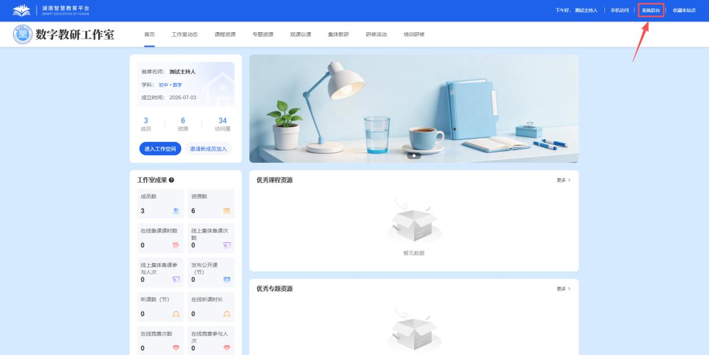
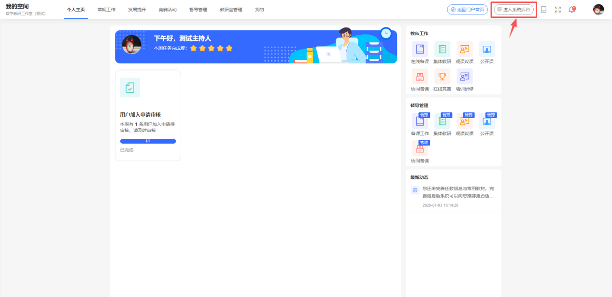
进入系统后台后，在顶部导航栏点击“业务管理”，然后在左侧导航栏点击“在线竞赛”，出现“创建活动”。
点击“创建活动”，设置完相应的活动配置后，点击“保存并发布”，即发起线上竞赛。
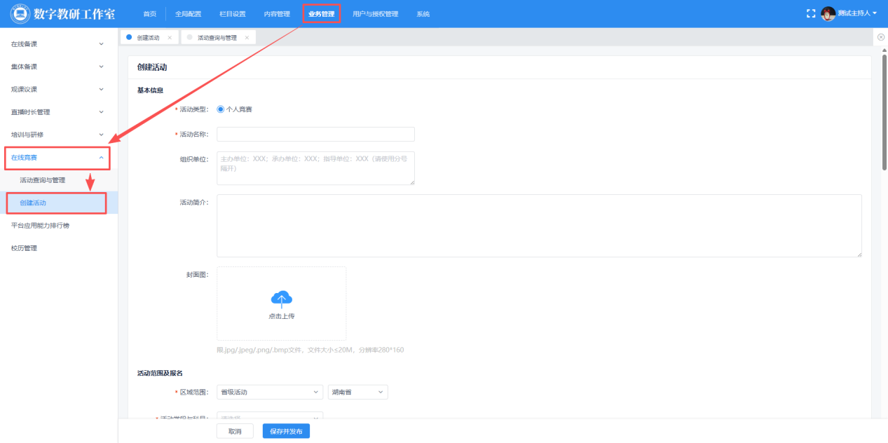
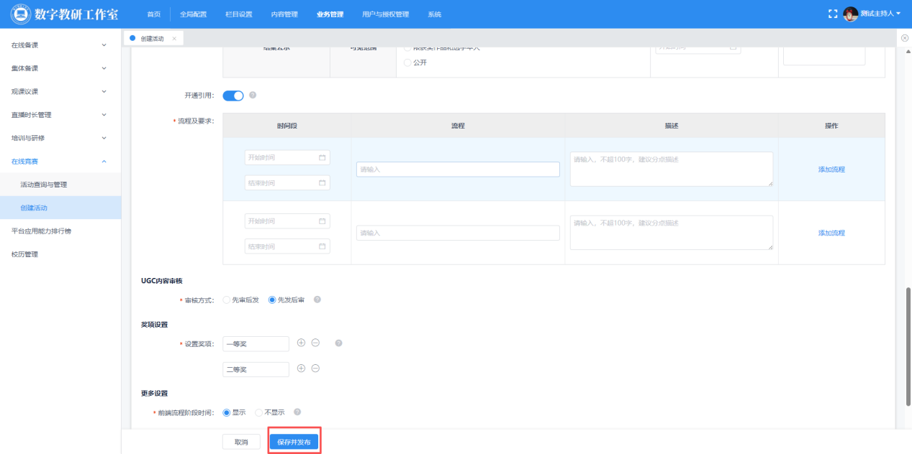
1) 活动范围及报名
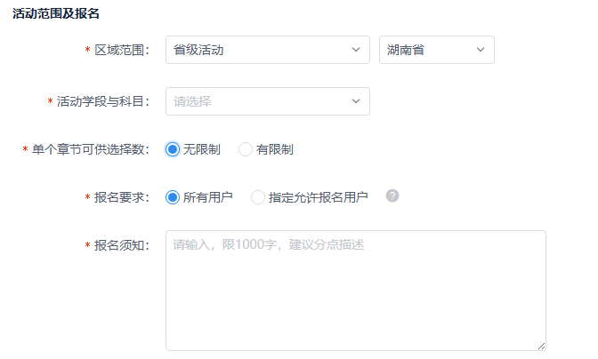
区域范围：可以设置允许哪些区域内的教师参与本次活动。
活动学段与科目：可以设置允许哪些学段学科的教师参与本次活动。
单个章节可供选择数：若选择“有限制”，参赛人员在创建作品时，教材章节将限制可选的人数。一般都可以设置为“无限制”。
报名要求：若选择“所有用户”，则所有工作室成员均可报名。若选择“指定允许报名用户”，则在“活动管理-允许报名用户”栏目中预先添加允许报名的用户，只有添加为允许报名的用户可报名本活动。
报名须知：用户报名可以看到设置的报名须知。
2) 活动安排
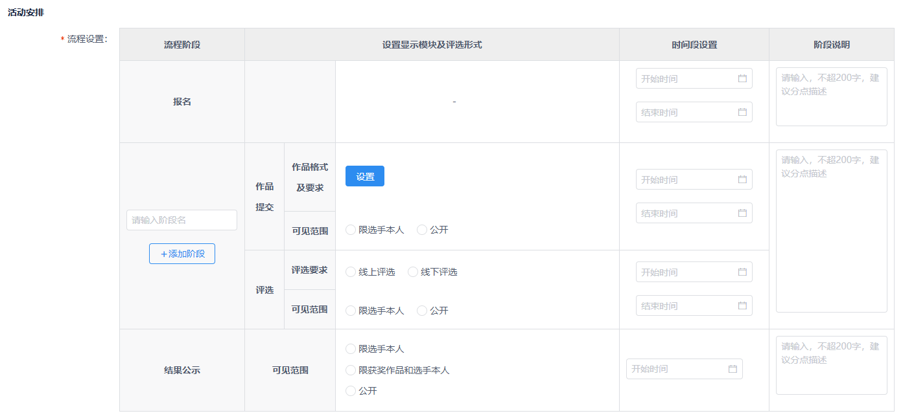
流程设置：根据赛事安排，可设置多个阶段（如初赛、决赛等）。简单赛事，建议设置一个阶段即可。
若设置多阶段，可点击“添加阶段”，添加多个阶段。每个阶段都支持作品提交和评选流程。若要设置选手在本阶段入围后，才有资格提交下一阶段作品。则可以勾选“本阶段设置入围”。
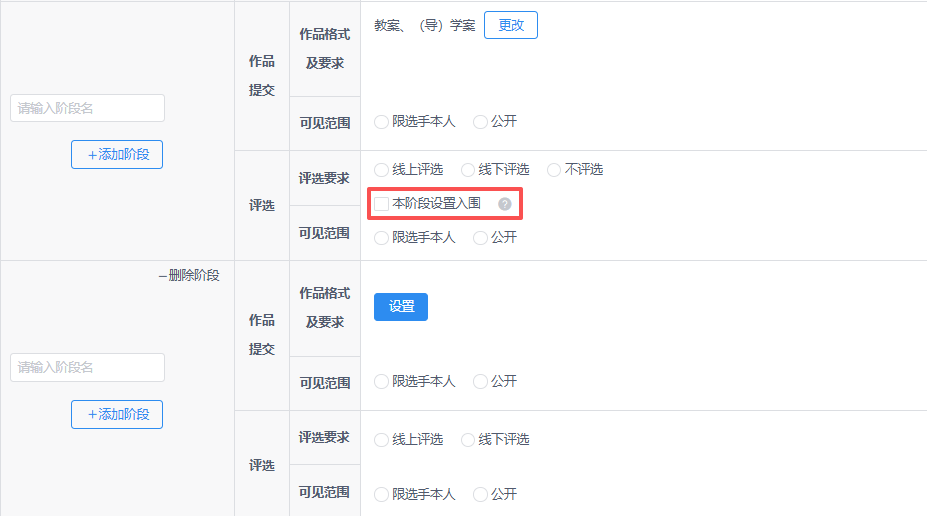
关于作品提交，点击“设置”后，需在对应弹窗中设置提交作品内容及格式，勾选需提交的作品类型（如教案、课件等），并设置格式。
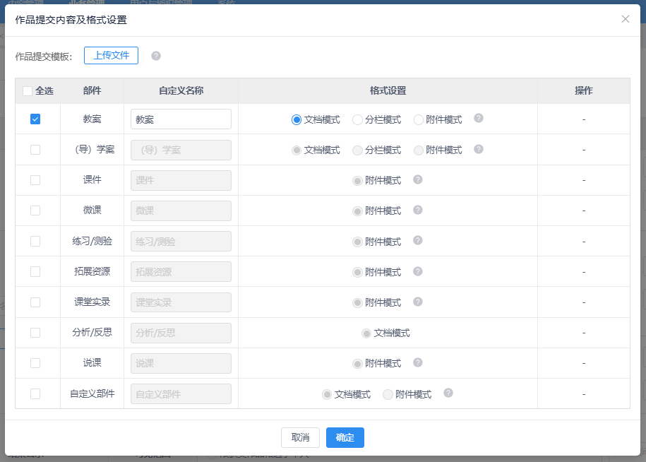
文档模式为在线文档编辑（可导入本地文档和引用）；分栏模式为分模块填充内容，包括在线编辑和上传本地文件；
附件模式为上传本地文件。
在线编辑模式如下：直接在线编辑作品内容。
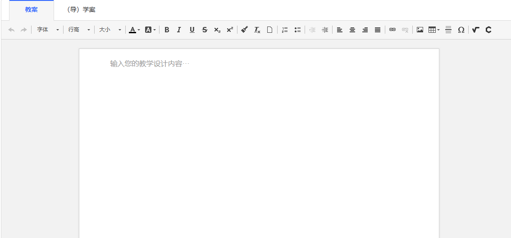
分栏模式如下：根据固定的分栏在线编辑作品内容。
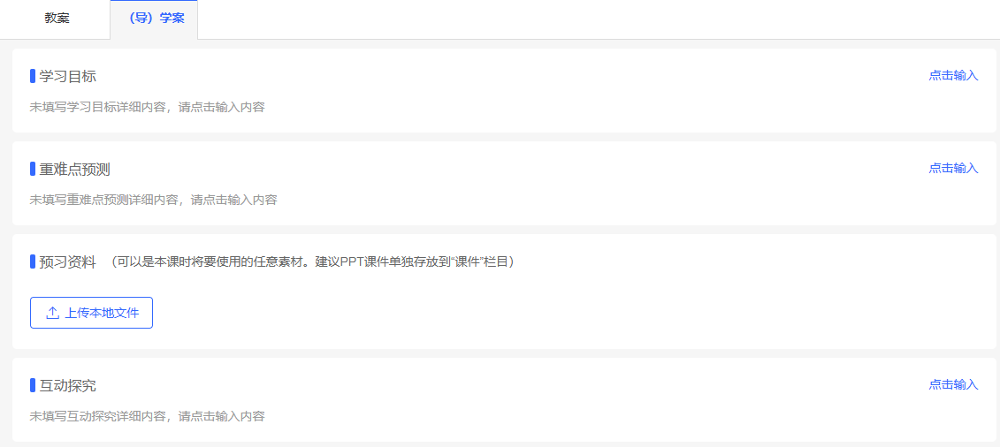
附件模式如下：直接上传附件作品内容。
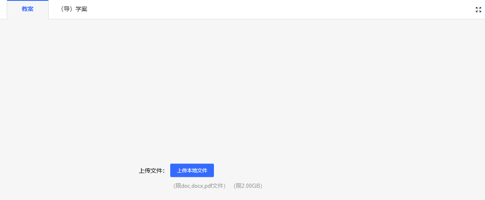
关于可见范围，作品提交、评选、结果公示都可设置可选范围，作品提交和评选的可选范围为“限选手本人/公开”，“限选手查看”即选手提交的作品和获得评分仅选手本人可查看，其他人不可查看，“公开”则将以上内容设置为公开，选手和其他人都可查看；“结果公示”在此基础上增加“限获奖作品和选手本人”，即获奖作品和选手为所有人可见。
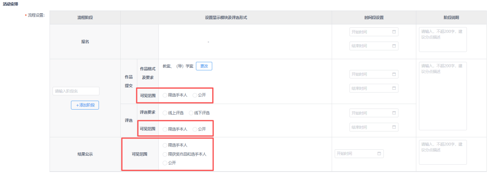
流程及要求：此处设置的流程和时间信息仅用于展示给用户查看，而系统将按照“流程设置”中的各项设置严格执行。此处可以和“流程设置”中的流程、时间保持一致，也可以根据需要进行调整显示。
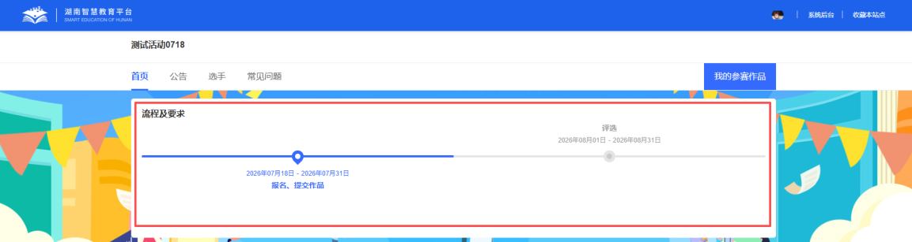
注意：活动开始后，活动范围及报名、流程设置等部分信息不能再修改，请在活动开始前认真设置好相关信息。